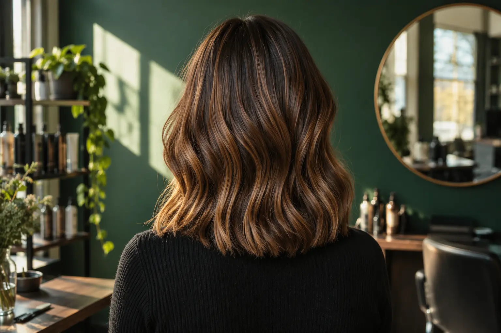

Plaukų dažymo gidas: spalva, technika ir ankstesnio dažymo istorija
Autorius: Madbeauty redakcija · Numatyta 2026 m. lapkričio 2 d. 10:00 (Lietuvos laiku)
Kaip pasirinkti dažymo paslaugą pagal norimą spalvos pokytį, jo vietą ir ankstesnio dažymo istoriją.

Plaukų dažymo būdą rinkitės pagal tris dalykus: kokio spalvos pokyčio norite, kurią plaukų dalį norite keisti ir kokia yra ankstesnio dažymo istorija. Pirmiausia nuspręskite, ar norite atnaujinti esamą spalvą, ją pakeisti, pašviesinti visus plaukus ar tik dalį sruogų, ar spręsti netolygų ankstesnį rezultatą. Paslaugos pavadinimas meniu savaime neatskleidžia visos darbų apimties.
Pirmiausia apsibrėžkite norimą pokytį
- Norite atnaujinti spalvą ar ataugusią zoną? Nurodykite, ar kalbate apie šaknis, ar apie visą plaukų ilgį. Tai padeda atskirti mažesnės zonos darbą nuo visos galvos dažymo.
- Norite šviesesnio rezultato? Pasakykite, ar pokytis turėtų apimti visus plaukus, ar tik pasirinktas sruogas. Kiekvieno atvejo planą reikia vertinti pagal pradinę spalvą ir istoriją.
- Norite koreguoti atspalvį, bet neplanuojate didelio spalvos pokyčio? Paklauskite, ar pasiūlyme numatytas tonavimas, ar tai atskira paslauga. 2026 m. spalio 9 d. peržiūrėtame vieno salono meniu tonavimas ir visų plaukų dažymas pateikti atskirai.
- Ankstesnis rezultatas netolygus arba ne toks, kokio tikėjotės? Apibūdinkite, kas jau atlikta ir ką norite pakeisti. Tokia užduotis gali skirtis nuo įprasto spalvos atnaujinimo.
Pasirinkite zoną, ne vien technikos pavadinimą
Atskirkite tris klausimus: kur turi matytis pokytis, kaip jis paskirstomas ir kokio atspalvio siekiate. Sruogų pašviesinimas, visų plaukų šviesinimas kartu su tonavimu ir balayage gali būti pristatomi kaip skirtingi pasirinkimai; tai matyti ir Wella profesiniame pavyzdyje. Tai gamintojo pateiktas technikų pavyzdys, o ne nepriklausomas įrodymas, kad konkretus būdas tinka kiekvienam.
Meniu terminai nėra vienodi. Viename peržiūrėtame pasiūlyme sruogų dažymo apimtis siejama su plaukų ilgiu ir tonavimu; kitame tonavimas, visų plaukų dažymas ir kirpimas yra atskiri meniu punktai. Tai konkrečių salonų pavyzdžiai, o ne bendra kainodara ar Madbeauty teikėjų pasiūla: Žirmūnų 22 meniu ir Faces Hair & Makeup meniu (peržiūrėti 2026 m. spalio 9 d.).
Kokią istoriją ir vaizdus pateikti konsultacijoje
Užrašykite, ką žinote apie dabartinę spalvą ir ankstesnius dažymo ar šviesinimo darbus. Jei tikslaus produkto ar technikos pavadinimo nežinote, nespėliokite — taip ir pasakykite. Pridėkite dabartinės spalvos ir norimo rezultato nuotraukas, jei jų turite; jos padeda apibūdinti kryptį, bet nėra tikslios galutinio atspalvio prognozės.
Konsultacijoje paprašykite paaiškinti, kokie darbai įtraukti, ar tonavimas ir kirpimas skaičiuojami atskirai, kaip bus patvirtinta galutinė apimtis ir ar specialistas mano, kad norimas pokytis realus pagal pateiktą istoriją. Konkrečių dažų mišinių, oksidantų ar veikimo laiko savarankiškai nesirinkite.
Vyrų paslaugų pavadinimai neapibrėžia dažymo užduoties
Dažymo pasirinkimą apibūdinkite pagal tikslą ir zoną, nepriklausomai nuo to, kam paslauga skirta: pavyzdžiui, spalvos atnaujinimas, žilų plaukų maskavimas ar dalies sruogų pakeitimas. Jei ieškote vyrams skirto pasiūlymo, patikrinkite, ar meniu aiškiai nurodo būtent dažymą, o ne tik kirpimą ar barzdos priežiūrą. Viena paslauga nepatvirtina kitos pasiūlos.
Trumpa sprendimo kortelė
- Tikslas: atnaujinti, pakeisti, pašviesinti ar koreguoti spalvą.
- Zona: šaknys, visas ilgis, pasirinktos sruogos ar kita aiškiai apibrėžta vieta.
- Pradinė būklė: dabartinė spalva ir žinomi ankstesni dažymo darbai.
- Apimtis: kas įskaičiuota, ar tonavimas ir kirpimas atskiri, kada patvirtinama kaina ir vizito planas.
Pavyzdys, kaip suformuluoti užklausą: „Noriu šviesesnio akcento tik prie veido. Pridedu dabartinės spalvos nuotrauką ir žinomą dažymo istoriją. Kokią paslaugą jūsų meniu reikėtų rinktis, kas į ją įeina ir ar pirmiausia reikia konsultacijos?“ Tai informacijos perdavimo pavyzdys, ne konkrečios technikos rekomendacija.
Palyginkite procedūrų aprašus kataloge: Dažymas. Konkrečią darbų apimtį, kainą ir prieinamumą tikrinkite prie realaus teikėjo pasiūlymo.
Susiję gidai
Šaltiniai
- Žirmūnų 22 · plaukų paslaugų meniu · www.treatwell.lt
- Faces Hair & Makeup · dažymo ir kirpimo apimtis · www.treatwell.lt
- Looks · kirpimas ir dažymas · www.treatwell.lt
- Wella · balayage, sruogos ir šviesinimas · www.wella.com